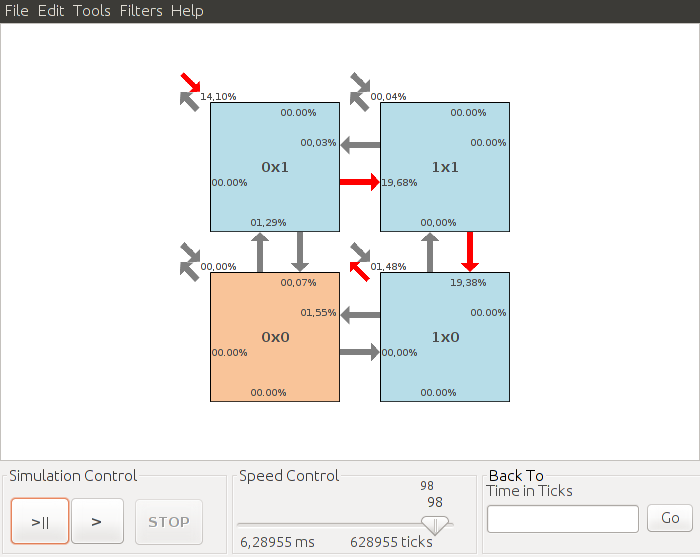
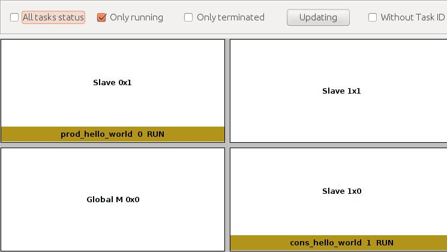
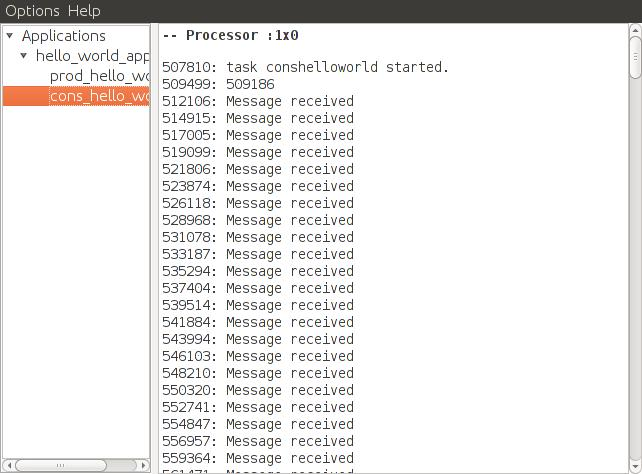
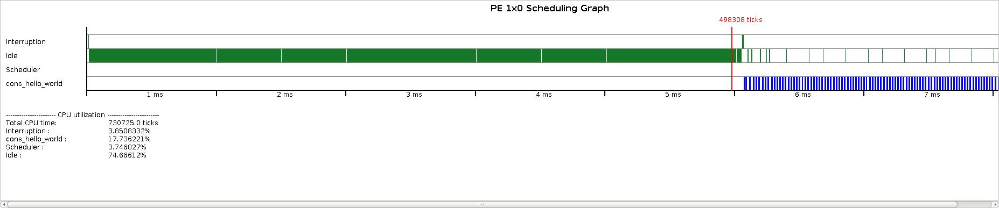

HeMPS
Hermes Multiprocessor System on Chip

TUTORIALS
- HeMPS presentation
- Tutorial (in Portuguese)
- Formato dos Pacotes
- Transações dos Protocols
- Ler Capítulos 3 e 4 da Dissertação do Guilherme Castilhos
- Ler Capítulo 3 da Tese do Everton Carara
What do you need?
- Ubuntu 12+ enabled to execute 32 bits applications
- GCC
- mips-gcc cross compiler:download here
- Python 2.6+
- SystemC 2.3+
- Java JRE 7+
- ModelSim or Questa (necessary to VHDL simulation)
Download HeMPS from GitHub
- Download link
- ou: "git clone https://github.com/GaphGroup/hemps.git"
Enviroment variables
- Create a source_hemps file with the following contents:
- Execute source source_hemps
Creating and running a Hello World Application
Creating a Hello World Application
The next steps creates two communicating tasks that print the Hello World text at each communication iteration.
- Enter into hemps/applications directory (This directory contains the application code)
-> cd $HEMPS_PATH/applications
- Create a new directory called hello_world_app
-> mkdir hello_world_app
- Enter into directory hello_world_app
-> cd hello_world_app
- Create the producer application's task (.c file) called prod_hello_world
-> gedit prod_hello_world.c
- Inserts the following code into prod_hello_world.c
- Create the consumer application's task (.c file) called cons_hello_world
-> gedit cons_hello_world.c
- Inserts the following code into cons_hello_world.c
Creating a Hello World testcase file
The next steps creates a simplified testcase file used by HeMPS to generate, compile and simulate a given testcase.
You can see a detailed testcase description into the example.yaml file
- Enter into testcases directory
-> cd ../../testcases
- Create the file hello_world.yaml
-> gedit hello_world.yaml
- Inserts the following code into hello_world.yaml
Generating, compiling and running the testcase
The next steps compile and simulate the hello_world testcase
- Call the hemps-run script passing the testcase file and the simulation time in milliseconds. Important: path to SystemC and MIPS cross-compiler must be set.
-> hemps-run hello_world.yaml 15
The simulation must start and the Graphical Debugger must be automatically opened
By clicking into play button (>) it is possible to follow the communication between the tasks observing the red arrows.

You can open the task mapping view (tools->task mapping overview) to observe the processor where the task were allocated.

You can observe the log genated by each task by calling the Deloream tool (tools->Deloream) and performing a two-click above of the desired task.

You can also oberve the CPU utilization of the PE running each task by clicking above the desired PE and going to Scheduling tab and scheduling report.
